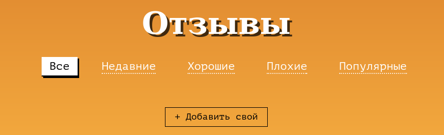
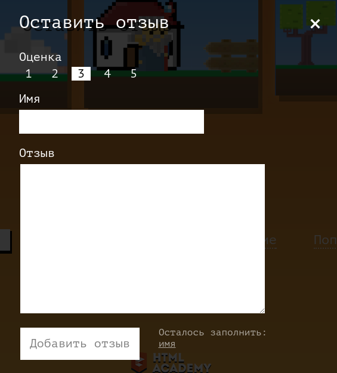
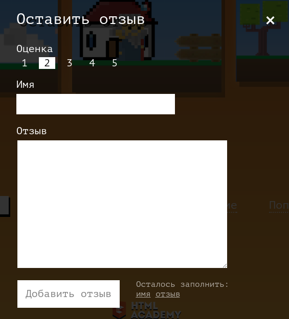
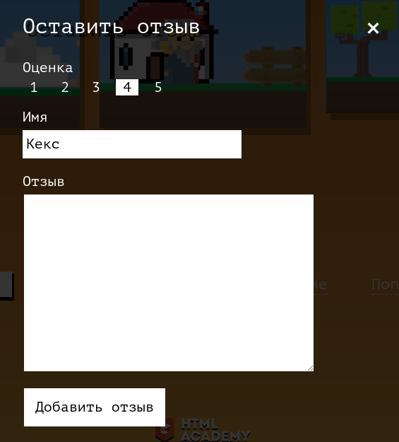
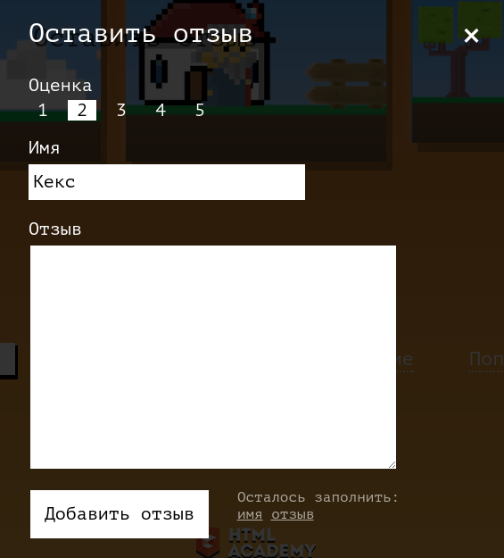

Результаты проверки
Шаг 1. Прокручиваем страницу к кнопке для открытия формы отзывов
Совпадение 100.00%

Шаг 2. Щёлкаем по кнопке «Добавить свой»
на скриншоте кнопка задизаблена, в «осталось заполнить» только поле «имя»
Совпадение 100.00%

Шаг 3. Переключаем оценку на «2»
на скриншоте кнопка задизаблена, в «осталось заполнить» поля «имя» и «описание»
Совпадение 100.00%


Шаг 4. Вводим в поле имени строку «Кекс»
на скриншоте кнопка задизаблена, в «осталось заполнить»: «описание»
Совпадение 100.00%

Шаг 5. Вводим в поле описания строку «Не хватает пальцев на лапах для управления магом.»
на скриншоте кнопка не задизаблена, блок «осталось заполнить» исчез полностью
Совпадение 100.00%